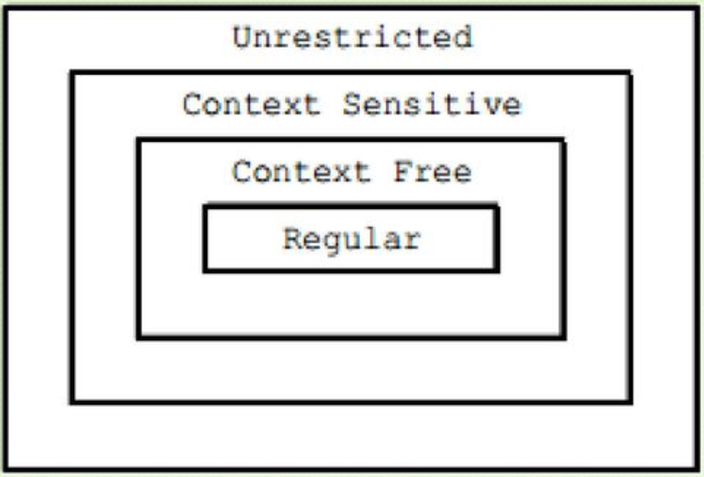

Tipe sebuah grammar (atau bahasa) ditentukan dengan aturan sebagai berikut :
A language is said to be type-i (i= 0, 1, 2, 3) language if it can be specified by a type-i grammar but can't be specified any type-(i+1) grammar.
Ciri :
Tidak ada batasan pada aturan produksi
Contoh :
Abc -> De
Ciri :
Panjang string ruas kiri harus < (lebih kecil) atau = (sama dengan) ruas kanan
Contoh :
Ab -> DeF
CD -> eF
Ciri :
Ruas kiri haruslah tepat satu simbol variabel, yaitu simbol non terminal
Contoh :
B -> CDeFg
D -> BcDe
Ciri :
Ruas kiri hanya memiliki maksimal satu simbol non terminal
Contoh :
A > e
A > gH
> Ruas kiri semua produksinya terdiri dari sebuah VN maka G1 kemungkinan tipe CFG atau RG
> Karena semua ruas kanannya terdiri dari sebuah VT atau string V T VN maka G1 adalah RG
> Ruas kiri semua produksinya terdiri dari sebuah VN maka G2 kemungkinan tipe CFG atau RG
> Karena semua ruas kanannya terdiri dari sebuah VT atau string VN VT maka G2 adalah RG
> Ruas kiri semua produksinya terdiri dari sebuah VN maka G3 kemungkinan tipe CFG atau RG
> Karena semua ruas kanannya mengandung string VT VN (yaitu bB) dan juga string VN VT (Ba) maka G3 bukan CFG, dengan kata lain G3 adalah RG
> Ruas kiri semua produksinya terdiri dari sebuah VN maka G4 kemungkinan tipe CFG atau RG
> Karena semua ruas kanannya mengandung string yang panjangnya lebih dari 2 (yaitu aAb) maka G4 bukan RG, dengan kata lain G4 adalah CFG.